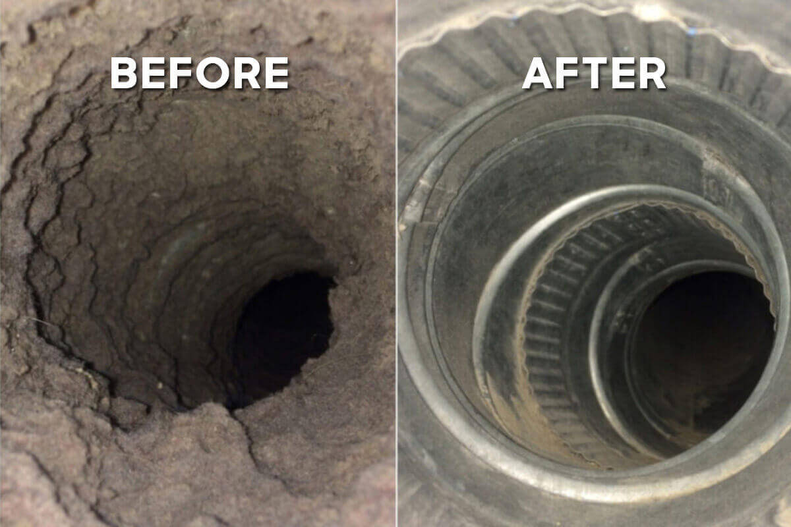

Trusted By Dallas Homeowners
A clogged dryer vent is one of the leading causes of house fires — and the reason your clothes take two cycles to dry. We clear it out completely, safely, and fast.
Every load of laundry leaves behind lint that the lint trap doesn't catch. Over time it builds up inside the vent line itself, restricting airflow, trapping heat, and turning your dryer into a fire hazard hiding in plain sight. We clear the entire vent line — not just what you can see — so air flows freely and your home stays safer.
It's not just about drying time. A blocked dryer vent affects your safety, your utility bills, and your appliance's lifespan.
Lint is highly flammable, and a clogged vent traps heat and lint together — a leading cause of home dryer fires according to fire safety officials.
Restricted airflow means your dryer has to run cycle after cycle to fully dry a single load, wasting your time again and again.
A clogged vent forces your dryer to work harder and longer for the same results, driving up your electric or gas bill every month.
The motor and heating element strain harder against blocked airflow, leading to premature wear, breakdowns, and costly repairs.
A blocked vent can force exhaust gases back into your home instead of outside — a serious safety concern for gas dryers.
Trapped moisture in a clogged vent creates a damp environment where mold and musty odors take hold — and an obstructed vent hood can invite pests inside.
This is the most common sign of a restricted vent — the dryer simply can't push enough hot air through to dry your clothes in a normal cycle.
Trapped heat with nowhere to go is a direct sign of blocked airflow — and a fire risk warning sign.
A burning smell can mean lint is overheating inside the vent. A musty smell points to trapped moisture and possible mold.
If lint is escaping around the dryer itself or piling up at the exterior vent, the line is likely packed well beyond the trap.
A weak or barely-moving flap means airflow is struggling to make it all the way through the line.
Even without obvious symptoms, most manufacturers and fire safety experts recommend annual dryer vent cleaning as routine home maintenance.

Tell us about your dryer setup and vent length for a fast, accurate estimate.
We clear lint from the duct, transition hose, and exterior vent hood — not just the lint trap.
We confirm strong, clear airflow at the vent exit before we consider the job done.
Dryer Vent Cleaning
Dryer Vent Cleaning
Most homes should have their dryer vent professionally cleaned once a year. Larger households, longer vent runs, or homes with pets may benefit from cleaning every 6-9 months.
No — the lint trap only catches a portion of the lint from each load. The rest travels into the vent duct itself, where it slowly builds up over months and years until airflow is seriously restricted.
Yes, we service vent lines for both gas and electric dryers. Gas dryers carry an added safety concern since a blocked vent can affect how exhaust gases are removed from your home.
Most standard vent runs take under an hour. Longer or more complex vent paths — including second-floor laundry rooms — may take a bit longer.